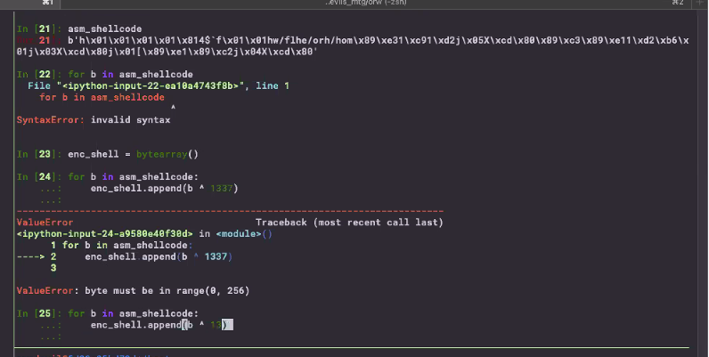

The idea of encoding is to scample your code (a popular way is the XOR every byte) then your main shellcode's action is to rebuild the XOR'd code and execute
- AV's are looking for specific bytes, by scambling you can bypass
